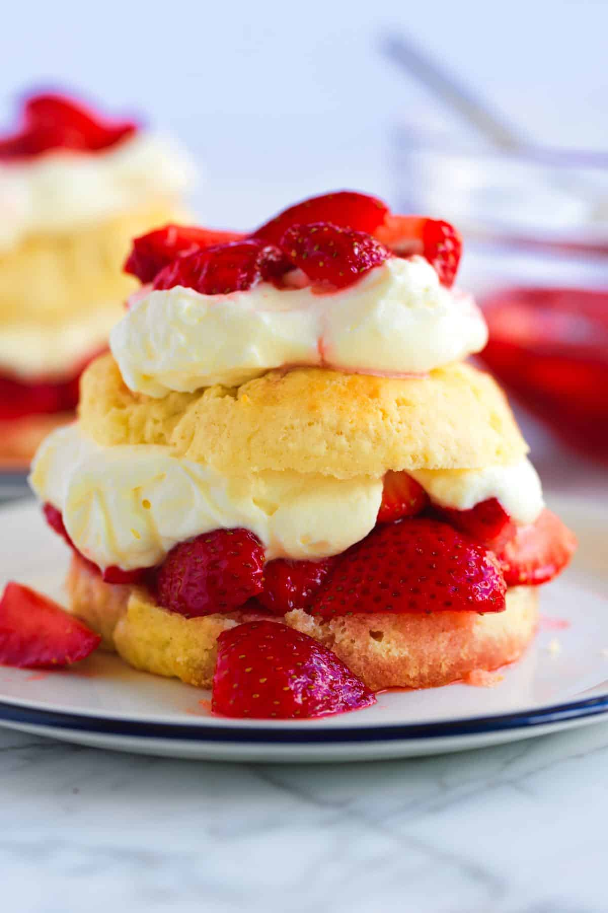

🍓
⭐
🍓
✨
🍓
⭐
🎀
💗
🍓
✨
💗
🎀
A cloud-like cake layered with pillowy soft sponge and rich whipped cream, crowned with fresh, juicy strawberries.
Every bite melts effortlessly — light, creamy, and perfectly sweet. The softness of the cake, richness of the cream,
and bright burst of strawberries create a dessert that feels magical. One slice and you’ll know why it’s pure heaven.
Fresh strawberries, fluffy cake, and sweet cream make this dessert extra yummy!
🍓 How to Make Strawberry Shortcake 🍓
Step 1: Prepare the Strawberries
Wash and slice the strawberries. Cook some with sugar for 5–10 minutes until a sweet syrup forms. Let it cool and save the rest of the fresh strawberries for serving.
Step 2: Make the Shortcakes
Preheat the oven to 220°C (425°F). Mix flour, sugar, baking powder, and salt. Rub in the butter until crumbly. Add the milk and egg, then mix into a soft dough.
Step 3: Bake the Shortcakes
Pat the dough to 2.5 cm thick, cut into rounds, and place on a baking tray. Bake for 12–15 minutes until golden brown.
Step 4: Whip the Cream
Beat the cream, sugar, and vanilla until light, fluffy, and soft peaks form.
Step 5: Assemble
Slice the shortcakes in half. Add strawberry syrup, whipped cream, and fresh strawberries. Place the top half on and serve.
✨ Enjoy layers of buttery shortcake, fluffy whipped cream, and sweet juicy strawberries! 🍓🍰